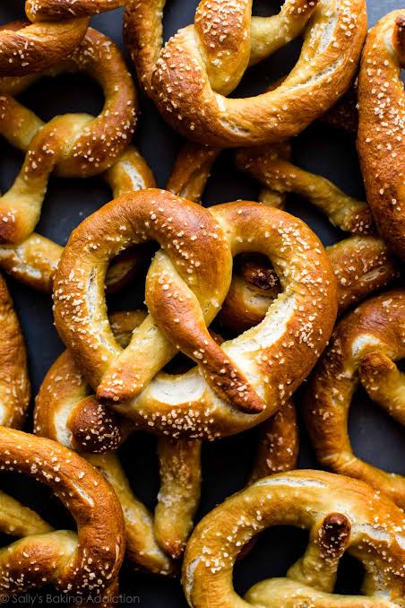

Pretzel
Home

Old fashioned pretzels
This pretzel recipe has been in my family for generations. My grandmother made them for us in the old country. They are salty, buttery and have just the right amount of pretzely bitterness.
Ingredients
- Flour
- warm water
- yeast
- baking soda
- sugar
- table salt
- butter
- large flake pretzel salt
Steps
- Disolve water and sugar in yeast. Let it set for ten minutes.
- pour yeast mixture into a bowl with flour and salt.
- Mix them together until they form a dough. You may add extra water if necessary.
- Knead for 7 minutes.
- Allow the dough to rest in a large oiled bowl for 1 hour.
- Divide the dough into 12 equal sized portions
- roll the dough out into strings about 15 inches (cm?) long.
- Twist the strings into pretzel shapes.
- Pour baking soda into pan of water and set it on a burner at medium heat.
- When baking soda mixture is hot, dip pretzels into mixture and set them on a baking sheet, 6 to a sheet.
- bake for 7 minutes at 450 degrees.
- Remove, spread melted butter on them and sprinkle with salt.
- eat while they are warm